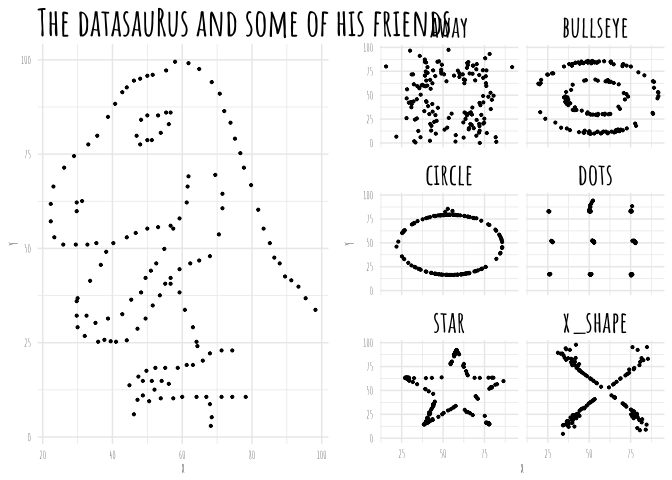
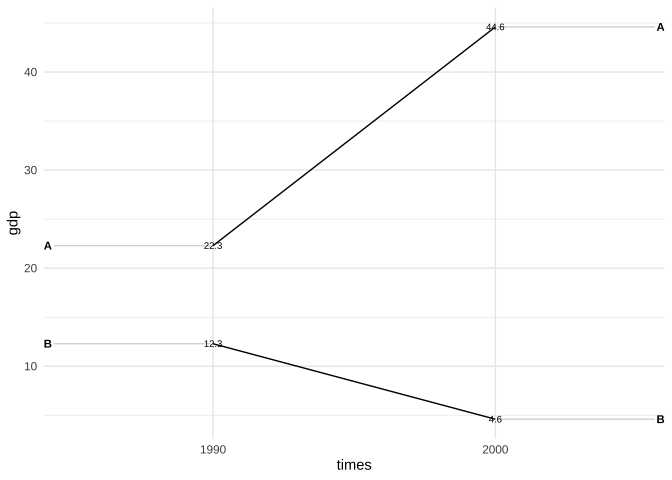

This site is the home, a personal package, and a vehicle for graphs made with R. It installs the source code of illustrations and other graphs that I made and provides convenient functions to make graphs with ggplot2 (e.g. slope plots.)
Installation
You can install Graphs from GitHub with:
# install.packages("devtools")
devtools::install_github("edgar-treischl/Graphs")Example
Without input, the plotgraph() function returns all available graphs.
library(Graphs)
plotgraph()
#> Error in plotgraph(): Please run `plotgraph()` with a valid argument.
#> Valid examples are:
#> anscombe_quartet.R
#> boxplot_illustration.R
#> boxplot_pitfalls.R
#> data_joins.R
#> datasaurus.R
#> gapminder.R
#> pacman.R
#> simpson.R
#> ucb_admission.RThe plotgraph() function just picks the installed source code and returns the graphs. For example, the datasaurus plot.
## basic example code
plotgraph("datasaurus.R")
And the package gives access to convenient functions to make ggplot2 graphs with less effort. For example, ggslope() returns a slope chart.
library(tidyr)
#> Warning: Paket 'tidyr' wurde unter R Version 4.1.2 erstellt
library(ggplot2)
#> Warning: Paket 'ggplot2' wurde unter R Version 4.1.2 erstellt
df <- tribble(
~times, ~country, ~gdp, ~inc,
"1990", "A", 22.3, TRUE,
"2000", "A", 44.6, TRUE,
"1990", "B", 12.3, FALSE,
"2000", "B", 4.6, FALSE
)
ggslope(df,
times = times,
outcome = gdp,
group = country)+
theme_minimal()